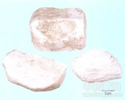

硼砂

拼音
Pénɡ Shā
别名
月石
来源
硼砂矿经精制而成的结晶。
生境分布
主产青海、西藏。此外，云南、新疆、四川、陕西、甘肃等地亦产。
药材特点
单斜晶系。成短柱状晶体。多为粒状、土状块体。通常为白色或微带浅灰、浅黄，浅蓝或浅绿色。条痕白色。玻璃或油脂光泽。半透明至不透明。解理良好，断口呈贝壳状。硬度2～2.5。比重1.69～1.72.性脆，有带甜的咸味。透明的硼砂，久置空气中会成白色粉状。多产于干涸的含硼盐湖中。
性状
由菱形、柱形或粒状结晶组成的不整齐块状，大小不一，无色透明或白色半透明，有玻璃样光泽。日久则风化成白色粉末，不透明，微有脂肪样光泽。体轻，质脆易碎。气无，味咸苦。以无色透明洁净的结晶为佳。可溶于冷水，易溶于热水中，溶液显碱性。燃之易熔融，初则体积膨大酥松如絮状，继则熔化成透明的玻璃球状。
性味
甘、咸，凉。
功能主治
清热，消痰，解毒，防腐。用于急性扁桃体炎，咽喉炎，口腔炎，齿龈炎，中耳炎，目赤肿痛，汗斑。
用法用量
外用适量，配合其他药物研粉搽敷患处。
化学成分
为四硼酸钠。
药理作用
1：为一弱碱：与硼酸一样有弱的抑菌作用
2：用平板法使培养基中含10％的硼砂：对大肠杆菌、绿脓杆菌、炭疽杆菌、弗氏痢疾杆菌、志贺氏痢疾杆菌、伤寒杆菌、副伤寒杆菌、变形杆菌及葡萄球菌、白色念珠菌均有抑制作用，用纸片法证明硼砂还能抑制白喉杆菌、牛型布氏杆菌、肺炎双球菌、脑膜炎球菌及溶血性链球菌等
3：可用以冲洗溃疡、脓肿：特别是粘膜发炎，如结膜炎、胃炎等，因其为碱性，可使粘膜去垢，口服用于尿道杀菌，特别尿为酸性时，可使之成碱性
摘录
《全国中草药汇编》